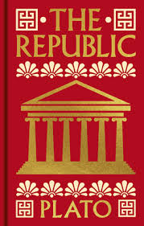

Does it ever feel like our democracy is ... broken?
This might feel like a distinctly modern problem, but a government run by the people, for the people has had critics for centuries. Like, when the French philosopher Alexis de Tocqueville visited the United States two hundred years ago, he was pretty skeptical - "Have you guys noticed all the racial and gender inequality?"
The Ancient Critique: Plato
While modern discourse often frames democracy as an unquestionable ideal, its foundational critiques date back to classical antiquity. In The Republic, the philosopher Plato expressed profound skepticism regarding the stability of democratic rule.
Plato characterized democracy as a system that risks descending into chaos because it provides citizens with "too much of the unmixed wine of freedom." He argued that without a rigid hierarchy of values or a pursuit of objective truth, democratic citizens become governed by their own "whims". In this state, individuals fluctuate between extremes — discipline and idleness, physical training and neglect — without a grounding conviction.
How could society be stable then?

The central danger, per the Platonic view, is that personal feelings eventually supersede objective facts, leading to a society where the voices of the ill-informed or the paranoid carry the same weight as those of the wise. This implies that
"The beauty of a democracy and the danger of it are one and the same."
Historical Origins and the Athenian Myth
While traditional education often credits 6th-century Athens as the birthplace of democracy, its true origins are far more complex:
Pre-Greek Democracy: Decision-making through equal say and collective choice was practiced by prehistoric hunter-gatherer societies long before the Greek city-states.
The Limits of Athens: The Athenian model was fundamentally exclusionary. By practicing slavery and denying citizenship to women and children, it failed to meet the modern criteria for a truly democratic system.
The difficulty of democracy scales with population. While a group of fifty hunter-gatherers may reach a consensus easily, a modern nation of millions finds collective satisfaction nearly impossible to achieve. This scale contributes to why, in global surveys of 36 democratic countries, the system often receives "mixed reviews".
Models of Democratic Governance
Modern political theory, notably through the work of Jürgen Habermas, identifies three distinct models of democracy that balance the relationship between the individual and the state differently.
1. The Republican Model
In the Republican model (distinct from partisan American politics), democracy is viewed as a shared civic value. Liberty is not merely an individual right but a tool exercised in service of the common good. The focus is on collective identity and shared educational or civic goals.
2. The Liberal Model
The Liberal model prioritizes the protection of individual rights. In this framework, the state exists to ensure that citizens can pursue their own private interests and preferences without interference, provided they do not infringe upon others.
3. The Deliberative Model
Habermas advocates for the Deliberative model as the best of both worlds. This model emphasizes the importance of the Public Sphere — a literal or virtual space where diverse people engage in rational discourse to reach a consensus. It presumes that through "talking it out", a society can arrive at mutually agreeable solutions.
Now, consider the example of choosing music on a roadtrip,
Model
Primary Focus
Application
Republican
Shared civic values and the common good
Choosing an educational podcast so the whole group learns together.
Liberal
Protection of individual rights
Each person wears headphones to listen to their own preferred music.
Deliberative
Reaching a consensus through rational talk
Discussing options in the Public Sphere until everyone agrees on a choice.
Structural Challenges: Representation and Boundaries
While Direct Democracy (individuals voting on every issue) is favored in theory by a majority of the global population, Representative Democracy is the most common modern iteration. Here, citizens elect officials to deliberate on their behalf.
The transition from small-scale groups to massive nation-states necessitates Representative Democracy, to elect someone to research and weigh in on the issues for you as none of us have time to be experts on everything. This introduces several critical points of failure:
The Representation Gap: An official may be elected who does not look, think, or vote in alignment with their constituents.
The Boundary Problem: The difficulty of determining whose voice is most relevant to a specific issue (e.g., should parents or teachers have more say in education?).
Participation Barriers: Low voter turnout is often compounded by structural obstacles—such as voter ID laws and shortened polling windows—that disproportionately impact the elderly and marginalized communities.
Participation and Systematic Barriers
The legitimacy of a democratic decision is often tied to the level of participation. In the United States, even record-breaking elections (such as 2020) see only approximately two-thirds of eligible voters participating.
Low participation is rarely just a product of apathy; it is frequently driven by:
Systematic Barriers: Voter ID laws, shortened polling hours, and limited access that disproportionately affect the elderly, persons with disabilities, and people of color.
Cynicism: When individuals feel their voices are structurally ignored, they cease to participate, leading to the philosophical question:
"Can a decision really be considered 'democratic'
if a large chunk of the population didn't even weigh in?"
Radical Democracy
Rather than viewing democratic conflict as a "bug," some theorists view it as a "feature."
This is the core of Radical Democracy, a term derived from the Latin radicalis, meaning "root". Radical democracy is a form of democracy that emphasizes inclusive and participatory politics and the expansion of equality.
The "Way of Life" Perspective
John Dewey argued that democracy is not merely a political institution but a "way of life." He believed the goal of a democratic society is to "harmonize the development of each individual with the maintenance of a society in which the individual activities will contribute to the common good." This requires "ongoing tweaking" rather than a final, static solution.
Agonism
Ernesto Laclau and Chantal Mouffe propose the concept of Agonism. This approach suggests that democracy should not strive for a total consensus that "blots out" different ideas. Instead, it should create a space where differences are accommodated and debated. In this view, conflict is not a "wrinkle to be smoothed over" but the very energy that keeps the system alive.
Radical democracy is the only way to save [the system] and avoid giving in to cynicism
--— Cornel West
💡 Extras
The concept of Agonism is increasingly relevant in the digital age. As social media "echo chambers" reduce the space for healthy disagreement, political theorists are looking for ways to rebuild a digital Public Sphere that allows for robust, respectful conflict rather than total polarization or forced agreement.